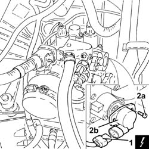

2127E40 HYDRAULIC SELECTION GEARBOX SPEED SELECTION POSITION SENSOR - R R
- Path
- Procedures > 21 GEARBOX UNIT > 2127 HYDRAULIC TRANSMISSION EXTERNAL LINKAGE > 2127E ELECTRIC SPEED SELECTION SYSTEM > 2127E40 HYDRAULIC SELECTION GEARBOX SPEED SELECTION POSITION SENSOR - R R
- Kind
- repair procedure (removal / refitting; the operation number is the code)
- Applies to
- engines: 2.0 JTS; all production periods; only with equipment: Smart gearbox
- Interactive page
- https://sloeber94.github.io/elrnDB-aGt/en/#/125001290
Applies to: engines: 2.0 JTS; all production periods
 Removing
Removing
 Refitting
Refitting1. Disconnect the electrical connection from the electro-hydraulic selection gearbox position sensor.
Description | Connector | |
|---|---|---|
1 | Gear selector potentiometer | See K68 SPEED SELECTION POTENTIOMETER |
2. Undo the bolts (2a) and remove the electro-hydraulic selection gearbox gear selector position sensor (2b).

Applies to: engines: 2.0 JTS; all production periods
Refitting
Removing- Place the electro-hydraulic selection gearbox gear selector position sensor back in its housing and secure it using the bolts.
- Connect the electrical connection to the electro-hydraulic selection gearbox position sensor.
- Op. 5530B52 BATTERY DRIP TRAY/SUPPORT - R.R.
- Op. 5530B10 BATTERY - R+R